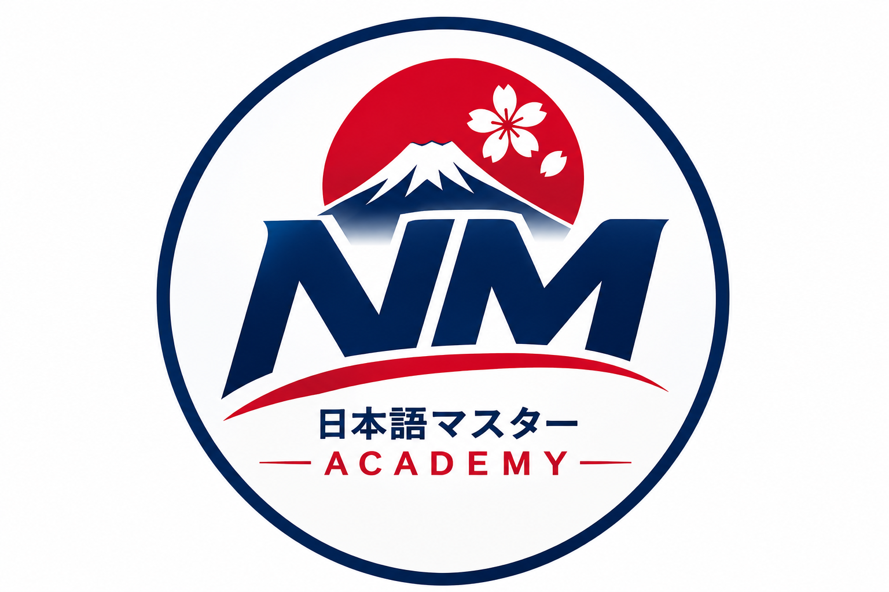

JLPT • BEGINNER
日本語 N5
Fondasi bahasa Jepang: huruf, kosakata, dan tata bahasa dasar.

Mulai perjalanan bahasa Jepang Anda. Pelajari huruf, kosakata, tata bahasa, dan uji kemampuan secara bertahap.
Pilih level untuk mulai belajar.
Fondasi bahasa Jepang: huruf, kosakata, dan tata bahasa dasar.
Materi lanjutan setelah menguasai kemampuan dasar N5.
Pengembangan kemampuan bahasa Jepang tingkat menengah hingga mahir.
Empat area penting untuk pemula.
Kenali karakter dasar bahasa Jepang.
Contoh lima huruf vokal. Baca karakter, lalu cocokkan dengan romajinya.
ア (a) ・ イ (i) ・ ウ (u) ・ エ (e) ・ オ (o)
Flashcard kosakata dasar untuk pemula.
Pola kalimat dasar bahasa Jepang.
Digunakan untuk menyatakan identitas atau menjelaskan sesuatu secara sopan.
わたしはファドリです。
Watashi wa Fadli desu. — Saya Fadli.
Pilih jawaban yang paling tepat.
Ringkasan aktivitas pada perangkat ini.
Progres demo akan bertambah ketika Anda menyelesaikan latihan. Data tersimpan di browser perangkat ini.
Skor latihan terbaik: Belum ada